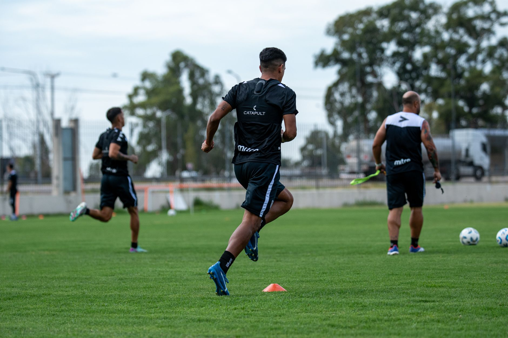

Building foundational strength for power
Strength is the engine behind every home run and high-velocity pitch. However, baseball strength training is not about becoming a bodybuilder; it is about developing functional power that translates to explosive movements. You want to focus on the posterior chain, which includes your glutes, hamstrings, and lower back, as these are the primary drivers of rotational force.
A solid strength program should prioritize compound movements. These exercises engage multiple muscle groups at once, providing the most bang for your buck during a busy season. Focus on the following core lifts:
Developing explosive speed and agility
In baseball, speed is rarely about running a long distance. It is about the first three steps. Whether you are sprinting to first base after a line drive or reacting to a bunt, your ability to accelerate quickly is what separates good players from great ones. Agility drills help improve your coordination and your ability to change direction without losing momentum.
Speed in baseball is not just about how fast you run, but how quickly you can react to the unexpected.
Rotational power and core stability
The most unique aspect of baseball is the rotational nature of the sport. Every swing of the bat and every throw from the mound relies on the ability to transfer energy from the ground, through the hips, and out through the core. If your core is weak, you lose power and significantly increase your risk of injury.
To build a core that supports high-velocity rotation, you must move beyond standard sit-ups. Incorporate exercises that challenge your stability while you are in motion. This builds the kind of functional strength that allows you to maintain a consistent swing even when you are tired in the late innings.
Injury prevention and mobility training
The repetitive motions of baseball, especially for pitchers and infielders, can lead to overuse injuries if not managed properly. A workout routine is incomplete without a dedicated focus on mobility and flexibility. Maintaining a full range of motion in your hips, shoulders, and thoracic spine is essential for both performance and longevity.
Dynamic stretching should always precede your workouts to prepare the muscles for intense activity. Static stretching is better reserved for your cool-down period to help with recovery. Don't overlook the importance of shoulder health; use resistance bands to strengthen the rotator cuff muscles regularly.
Creating a sustainable training schedule
The biggest mistake players make is trying to do too much too soon. Consistency is far more important than intensity. A moderate workout performed four days a week is significantly more effective than an extreme workout performed once every two weeks. You must balance your strength and conditioning with your actual skill work on the field.
Listen to your body. If you feel sharp pain, stop immediately. Recovery is when the actual growth happens, so ensure you are getting enough sleep and eating a balanced diet rich in protein and complex carbohydrates. If you are working with a group, such as a youth team, it is vital to integrate these routines into a larger framework. You can find more guidance on organizing these sessions in our article on Effective Baseball Practice Plans for Young Teams at https://dhyey.bond/blog/effective-baseball-practice-plans-for-young-teams/.
See Also
If you enjoyed this Baseball Guide article, check out Effective Baseball Practice Plans for Young Teams for more useful reading.